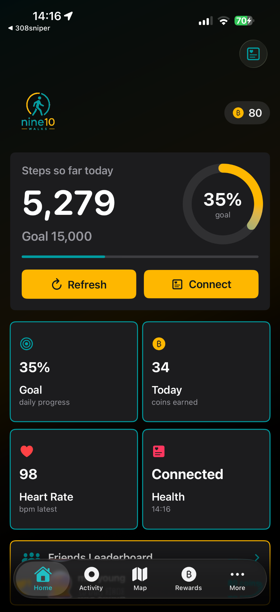
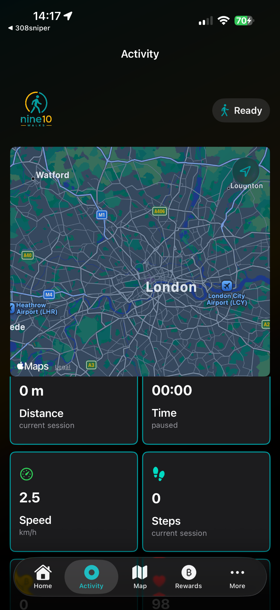
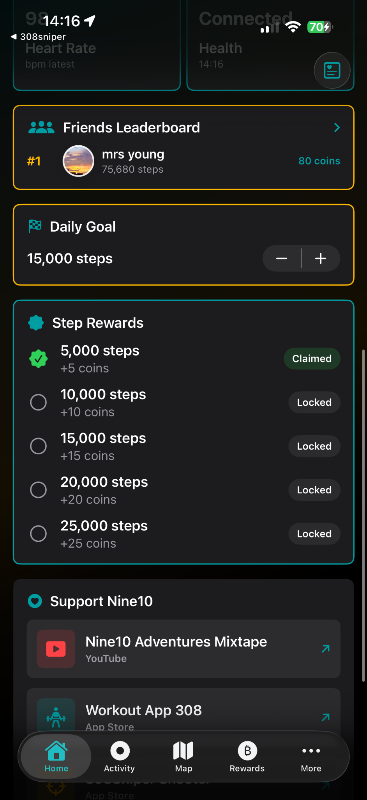
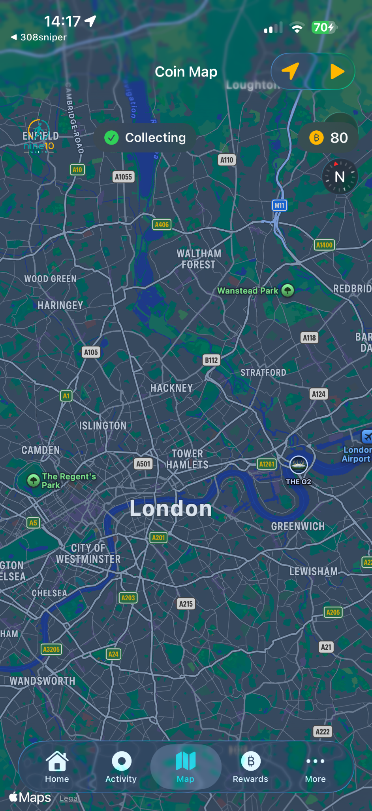
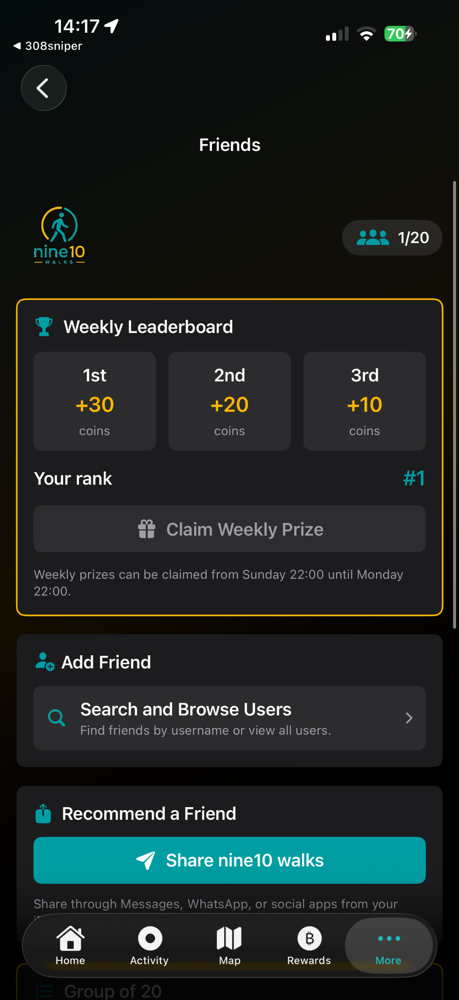

Daily goals
Set your step target and track your progress throughout the day.
Walk more. Earn more. Explore more.
Track your steps, connect with Apple Health, collect coins, climb the leaderboard and discover your city with a live walking map.

Set your step target and track your progress throughout the day.
Earn coins as you hit walking milestones and keep your streak going.
Use the map to walk, explore and collect as you move around.
Compete with friends and claim weekly prizes for top positions.
Follow distance, time, speed and steps during each walking session, with a clean dark interface designed for outdoor use.




Download Nine10 Walks and make every step count.